8 Martılar
Kara Ayaklı Martı
Rissa tridactyla, Black-legged Kittiwake
Nispeten yaygın ve az sayıda kış konuğudur.
Önceleri bir rastlantısal görüldüğü düşünülmüş, ancak son zamanlarda gelen kayıtlar eylül sonu ile mayıs başı arasında düzenli kış göçmeni olduğunu göstermiştir. Karadeniz kıyısında düzenli, Ege ve Akdeniz’de daha seyrektir. Ancak balıkçı teknelerinde görev yapanlar ve karaya doğru güçlü rüzgârların ardından kayda değer sayılarda görülebilir. Bu çoğu kuşun açıktan olduğunu ve çok nadiren kıyıya geldiğini göstermektedir.
İç sulardaki bir erişkin ve yedi ergen 23 Eylül 1982’de Birecik’te (Kinzelbach, 1985) ve bir erişkin 27 Nisan 1992’de Kulu Gölü’nde görülmüştür.
iki genç kuşun Robert Kolej’deki tahnit müzesinde bulunduğundan ve türün kışın İstanbul Boğazı’nda gözlendiğinden bahseder (Mathey-Dupraz, 1920–24).
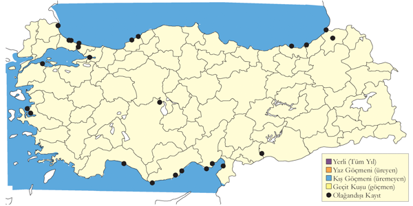
Üreme
Türkiye’de yuvalamaz.
Alttürler ve Sınıflandırma
Türkiye’de nominat alttürü bulunur.
İnce Gagalı Martı
Chroicocephalus genei, Slender-billed Gull
Lokal ve çok sayıda bulunan yaz konuğu, nispeten lokal ve orta sayılarda kış konuğudur.
Birçok alanda 2000 çifte kadar büyük koloniler halinde yuvalar. 1971’de Seyfe Gölü’nde 2100 çift, 1984’de Bolluk Gölü’nde 1900-2000 çift üremiştir. Buna rağmen, Ereğli Sazlığı ve Sultansazlığı gibi daha küçük koloniler bulunur. Son yıllarda sayıları kesinlikle azalmıştır.
Ülkenin yer köşesinde, başta kıyısal alanlar ve iç bölgelerdeki sulakalanlarda geçit türüdür. Az sayıda deniz kıyılarında ve baraj göllerinde görülebilir.1977 sonbaharının sonuna doğru Zonguldak Ereğli’de 1500 ve sonbahar 1973’de Ardeşen’de 85’e kadar sayılmıştır.
Akdeniz Bölgesi’nde temmuz sonundan Ege’de ağustos sonundan, Marmara’da kasım ortasından ve nisana kadar fazla olmayan sayılarda, özellikle güney ve batı kıyılarında kışlar, son sayımlara göre kışlama nüfusu 800-1600 kuştur. En yüksek sayıda Ocak 1989’da Büyük Menderes Deltası’nda kaydedilen 1284 ve Ocak sonunda 1992’de Gediz Deltası’nda kaydedilen 413 kuştur. Ocak 1992’de Çukurova deltalarında yaklaşık 600, Ekim 1970’de Acıgöl’de 1000’den fazla kuştur. Doğu Anadolu’da az sayılarda ağustos başı ile ekim başı arasında Van ve Erçek Göllerinde bulunur.
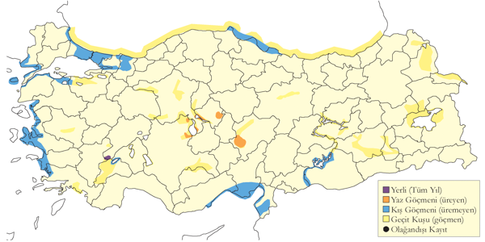
Üreme
İÇA. İç Anadolu’da çoğunlukla tuzlu veya acı olan üç sığ gölde (Kulu, Seyfe ve Bolluk) alçak ve düz adalarda, çıplak veya seyrek bitkili toprakta, 50-2100 çiftlik muntazam koloniler halinde ürer. Bazen diğer türlerle gevşek bir birliktelik halinde bulunur. Yuvasını yerde sığ bir çukura yapar, cılız bitki artıkları, ot ve az miktarda tüyle çevreler. Yuva kenarı hafif yükseltilmiş olup kuluçka dönemleri dışkıyla beyaza boyanıp güçlendirilerek çok belirgin olur. Yumurta sayısı 2-3, ara sıra 1. İlk yumurta nisan sonu, mayıs başında koyulur, en erken civcivler mayıs sonu haziran başında çıkarlar. Bu tarihler koloniler arasında tutarlılık gösterir. Muhtemelen bir başarısızlıktan sonra yapılan telafi kuluçkasıyla üreme dönemi uzatılabilir. 24 Haziran 1992’de Bolluk Gölü’nde gözlenen çoğu yavru hâlihazırda iri ve iyi tüylenmiş olup, arada içinde yumurta ve küçük yavrular olan yuvalar da bulunmuştur.
Alttürler ve Sınıflandırma
Monotipik bir türdür.
Karabaş Martı
Chroicocephalus ridibundus, Black-headed Gull
Lokal yaz konuğu ve yaygın ve çok sayıda bulunan geçit türü ve kış konuğudur.
İç ve Doğu Anadolu’da yaygın olarak birçok sulakalanda üremekte olsa da habitat değişimi ve kurutulmasıyla sayıları şüphesiz azalmaktadır. Acıgöl’de yaz kayıtları da bulunsa da bölgede kesin olarak ürediğine dair kayıt yoktur.
Önemli üreme alanlarının çoğu bugün tamamen veya kısmen tahrip edilmiştir. Seyfe Gölü’nde azami 120 çift, Ereğli Sazlığı’nda azami 361 çift, Yarma Bataklıkları’nda azami 215 çift, Gönenç Gölü’nde azami 100 çift.
Ülkenin yer yerinde yıl boyunca bulunsa da kışın çoğunluğu batı ve orta bölgelerinde yoğunlaşır. Ülke çapında kışlayan nüfusun genellikle 90.000 ila 130.000 arasında olduğu düşünülür. Marmara Bölgesi’nde kışın bütün kıyılar ve iç bölgelerde yaygın olup en yoğun bulunduğu Uluabat Gölü’nde Ocak 1996’da yapılan bir sayımla 6200 kuş sayılmıştır. Ege Bölgesi’nde kışın yaygın olup hem kıyılarda hem iç bölgelerde kayda değer sayılarda bulunur. En yüksek sayım Ocak 1970 ve Eylül 1972’de Acıgöl’de görülen 3000 kuştur. Kasım 1971’de Çorak Gölü’nde 2520 tane gözlenmiştir. Kasım 1971’de Seyfe Gölü’nde 1070 tane görülmüştür.
En yüksek sayıların gözlendiği dönemler geçit dönemidir, 24 Eylül 2004’de Sarıyer Barajı’nda 20.000 ve düzenli olarak mart aylarında Mogan Gölü’nde 10.000 tanesi görülür. Karadeniz kıyılarında kışın yaygındır, 1996’da Hopa ile İğneada arasında 17.968 tane sayılmıştır. Doğu Anadolu’daki sulakalanlarda geçit sırasında yaygın ve genellikle fazla olmayan miktarlarda olup birkaç kez sayıları 300’e ulaşmıştır.
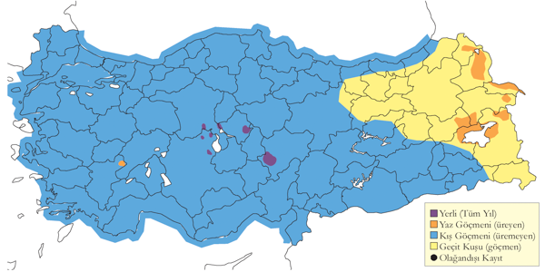
Üreme
İç ve Doğu Anadolu’daki birkaç alanda göller ve bataklıklardaki adalarda koloniler halinde ürer. Bazen Akdeniz martısı ve gülen sumru gibi diğer türlerle seyrek bir beraberlik içinde karışık koloniler oluşturur. Yuva zemine yapılır ve esasen bitki saplarıyla yapılır. Boyu değişken olup 0,3 m’ye kadar yüksek olabilir. Beraber yuvaladıkları alanlarda Akdeniz martısının yuvasından çok daha yüksektir. Yumurta sayısı genellikle 3, bazen iki, ara sıra birdir. İÇA. 22 Mayıs 1992’de Kulu Gölü’nde bir adada 350 çift üremiş, buradaki yuvaların çoğunda üç yumurta sayılmış, bazılarında yeni çıkan yavrular gözlenmiş olup, ilk yumurtlama tarihinin yaklaşık 26 Nisan olduğu tahmin edilmiştir. En geç yuva kayıtları şöyledir: 14 Haziran 1993’de Seyfe Gölü’nde ve 19 Haziran 1992’de Kulu Gölü’nde çoğu yavrunun hâlihazırda büyük ve hatta palazlanmış olduğu kolonilerde içinde hala yumurta olan yuvalardır.
Alttürler ve Sınıflandırma
Monotipik bir türdür.
Küçük Martı
Hydrocoloeus minutus, Little Gull
Yaygın ve az sayıda geçit kuşu ve kış konuğudur.
Bütün kıyılarda sıkça yüksek sayılarda rastlanan yaygın ve bol geçit türüdür. Karadeniz Bölgesi’nde en sık ve en yüksek sayılarda Kızılırmak Deltası’nda kaydedilmiş olup 1992 ilkbaharının başında 41.000 tane sayılmıştır (Hustings & Dijk, 1994). Marmara Bölgesi’nde bütün kıyılarda yaygın ve genellikle fazla olmayan sayılarda olup en yüksek sayıda ile İstanbul’da eylülde Eminönü ve Sarıyer arasında 410 tane, Meriç Deltası’nda 2000’e kadar sayılarda ve Büyükçekmece Gölü’nde 1730 tane sayılmıştır. Doğu bölgelerinde nadirdir. Ege Bölgesi’nde genellikle ağustos ortası ile nisan ortası arasında bulunur, ara sıra yazın da kaydedilir. Akdeniz Bölgesi’nde genellikle ağustos sonu ve mayıs başı arasında, ara sıra da yazın, orta sayılarda görülür, ancak bazı alanlarda ilkbaharda yüksek sayılar kaydedilmiştir.
Kıyı bölgelerinde yaygın, ancak iç bölgelerde seyrektir. Karadeniz kıyılarında yaygın ve genellikle fazla olmayan sayılarda bulunur, ağustos ve eylülde Trabzon’da 530 tane, ekimde Samsun ve Trabzon arasında 400’den fazla, Şubat 1997’de bütün Karadeniz kıyısında 1138 tane sayılmıştır (Welch & Welch, 1998a). Kışın az sayıda bulunur, nüfusu genellikle 1500-2500 bireydir, ancak ara sıra kalabalık sürüler de rastlanır. Sayıları genellikle az olsa da yüksek sayılarda bulunabilir ve en yüksek Büyük Menderes Deltası’nda 320 tane kaydedilmiştir.
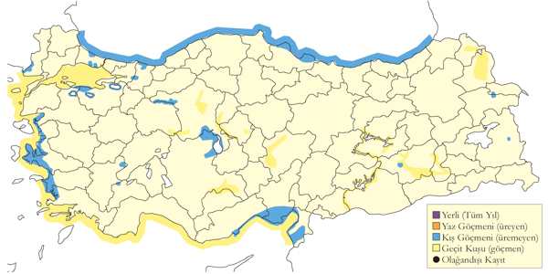
Üreme
Türkiye’de yuvalamaz.
Alttürler ve Sınıflandırma
Monotipik bir türdür.
Ada Martısı
Ichthyaetus audouinii, Audouin’s Gull
Nispeten yaygın ancak az sayıda yerlidir.
Güney Akdeniz ve Batı Ege kıyılarına seyrek ve oldukça lokal bir yerli kuştur. Kayıtların çoğu nisan başı ile ekim başı arasındadır. Çoğu gözlemde 10’dan az kuş görülür, ancak Fethiye’de Şubat-Mayıs arasında azami 15 kuş gözlenebilir. Göksu Deltası çok geç olarak 1951’de türün ilk kesin kaydının yapıldığı alan olup (Hollom, 1955), burada düzenli olarak görülür ve üremeyen bireyler de burada temmuz itibariyle toplanırlar.
Ürediği ilk kez 1973’de İçel Aydıncık Adaları’nda belgelenmiştir, bu popülasyon sonrada azalmış ve bugün mevcut olmayabilir. Ege kıyılarında son zamanlarda çok küçük sayılarda İzmir Karaburun’da ürediği bulunmuş, Akdeniz açıklarındaki birkaç küçük ve ıssız adada 1970’lerde yapılan gözlemler üreme şüphesi oluşturmuştur (OST, 1975). küçük koloniler halinde üremesi Alaçatı’da olası, Güllük Körfezinde muhtemel, Bodrum Yarımadası’nda muhtemel ve Datça Yarımadası’nda olasıdır (Eken, 1997c); ancak bu alanların hiçbirinde ürediği kesinleşmemiştir. Burger ve Gochfled tarafından yapılan yaklaşık 500 çiftlik Türkiye popülasyonu tahmini (Hoyo et al., 1996)aşırı yüksek olup dayanağı zayıftır.
Marmara Denizi’nin güney kıyılarında ara sıra görülebilir, ancak burada düzenli değil, nadirdir (Kasparek, 1992). İstisnai olarak Karadeniz’de, 23 Mayıs 1995’de Trabzon’da ikinci yazında bir birey ve Ekim 1984’de Gürcistan’da Batum’da görülmüştür (King ve Shirihai 1996). Bir kez iç sularda; 9 Eylül 1961’de Eğirdir Gölü’nde görüldüğü iddia edilmiş (Kumerloeve, 1961), ancak bu çok olası görülmemektedir.
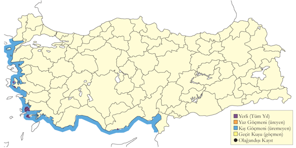
Üreme
AKD. Yakın zamana kadar İçel Aydıncık açıklarındaki iki küçük adan biri olan bodur vejetasyonlu küçük bir adada yuvalamaktaydı. Burada 1973’de 25 çift, 1974’de 28 çift yuvalamış, nisan sonunda yumurtalar, 28 Mayıs’ta yumurtadan yeni çıkmış yavrular gözlenmiştir (Witt, 1976). Burada 16 Nisan 1985’de yaklaşık 20 çiftin yuvaladığı, 1987’de de yaklaşık 30 çift, ancak 1996’da sadece 6 çift görülmüştür. Bu düşüşün nedeni 1974’de adada üremeyen gümüş martının 1996 yılında 40 çifte artmış olması olabilir (Magnin & Yarar, 1997). 6 Mayıs 2004’de ada ziyaret edildiğinde hiçbir ada martısı görülmemiş, birkaç çift gümüş martı bulunmuştur. EGE. İkinci üreme kolonisi İzmir Karaburun’da bir adada olup, 1996’da en azından bir çift bulunmuş (Boyla & Eken, 1998) ve 1997 Mayıs sonunda 2-4 kuş gözlenmiştir (Eken, 1997c). Türkiye’den yuva ve yumurta sayısı hakkında bilgi yoktur. Ülke dışında yerde alçak bir çukurda yuvalar, yuvayı bitki gövdeleri, yosun ve diğer bitkisel materyalle astarlar. Yumurta sayısı genellikle 2-3’tür.
Alttürler ve Sınıflandırma
Monotipik bir türdür.
Akdeniz Martısı
Ichthyaetus melanocephalus, Mediterranean Gull
Lokal ve çok sayıda bulunan yaz konuğu, oldukça yaygın ve yer yer çok sayıda bulunan geçit türü ve kış konuğudur.
Popülasyonu anlaşıldığı kadarıyla sabittir. İç Anadolu ve Ege Bölgesi’ne lokal yaz konuğudur. Çoğunlukla tuzlu veya acı ve sığ üç gölde, Kulu, Seyfe ve Bolluk göllerinde yuvalar. Ege’de Büyük Menderes ve Gediz deltalarındaki lagünlerde yuvalar. Marmara Denizi lagünlerinde çok az sayıda üremektedir. En büyük üreme kolonileri İç Anadolu ve Ege’de olup, toplam 400-2250 çift ürer.
Marmara Bölgesi’nde mart başıyla haziran başı arasında ve temmuz ortasıyla kasım ortası arasında görülür, İstanbul Boğazı, Marmara kıyıları ve batıda Çanakkale Boğazı’nda büyük sürüler kaydedilmiştir. İlkbahar göçü martın son haftası ve nisanın ilk ilk haftasında tepe yapar, 4 Nisan 2003’de İstanbul Boğazı’ndaki bir saatlik vapur seyahati sırasında 500’den fazla görülmüştür. Ege Bölgesi’nde geçit sırasında orta sayılarda olup kışın Küçük Menderes Deltası’nda 250, Çanakkale yakınında 430 bireylik sayımlar vardır (Eken, 1997d). Akdeniz Bölgesi’nde mart ortasıyla mayıs başı arasında ve ağustos başıyla kasım sonu arasında yaygın olsa da az sayıda bulunur; aynı bölgede kışın genellikle seyrek ve az sayıda görülebilir. İç Anadolu’da bu tür üreme alanları dışında seyrek göçmendir. Doğu bölgelerimizde de tür genellikle nadirdir. Sonbaharda yüksek sayımlar arasında Tekirdağ’da temmuzda 600, ekimde 1200, Küçükçekmece ve Silivri’de ekimde 6000 ve eylülde 7300 ve Büyükçekmece’de geçit sırasında 10.000’e kadar yükselen sayılarda rastlanır.
Şubat 1997 yılında Karadeniz Kıyısı boyunca yapılan sayımda 357 tane sayılmış olup (Welch & Welch, 1998a), ülke genelinde ortalama kışlama popülasyonu 2000-3000 bireydir.
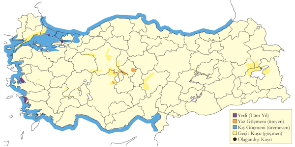
Üreme
Koloniler halinde ürer, üreme popülasyonu 400-2250 çifttir (Magnin & Yarar, 1997). Son zamanlarda sadece büyük koloniler gözlenmiştir. Çıplak topraktan ve sınırlı bitkilerden oluşan alçak ve düz adalarda yuvalar. Bazen gülen sumru ve karabaş martı gibi diğer türlerle serbest bir beraberlik içinde yuvalar. Yuvası yerde sığ bir çukur olup, bitki kökleri, otlar, bir miktar tüyle astarlanır. Karabaş martı ile beraber üredikleri yerde daha fazla materyal biriktirir, ancak yuvalar daha küçük ve daha alçaktır. Yumurta sayısı genellikle üç, bazen iki ve ara sıra birdir. İlk yumurta nisan sonunda veya mayıs başında konur, ilk yavru mayıs sonu ve haziran başında çıkar; bu farklı koloniler arasında oldukça tutarlı bir düzendir. Üreme dönemi muhtemelen telafi yuvaları nedeniyle uzatılabilir. İÇA. 19 Haziran 1992’de Kulu Gölü’ndeki yavruların çoğu büyümenin ilk yarısını tamamlamış, bazı yuvalarda yumurta veya küçük yavrular da gözlenmiştir. EGE. Büyük Menderes Deltası ve Gediz Deltası’nda kıyı lagünlerinde yuvalar. 26 Haziran 1999’da Büyük Menderes Deltası’nda gözlenen birçok yavru iri olsa da yumurtadan yeni çıkmışlar da bulunmuş olup, bu yaklaşık 4 haftalık bir farka denk gelir.
Alttürler ve Sınıflandırma
Monotipik bir türdür.
Büyük Karabaş Martı
Ichthyaetus ichthyaetus, Pallas’s Gull
Lokal ve az sayıda kış konuğudur.
Özellikle doğu bölgelerinde seyrek bir kış göçmeni ve anlaşıldığı kadarıyla geçit türüdür. Kışlayanların ortalama popülasyonları 200-400 birey arasındadır. Eskiden çok nadir olduğu düşünülmüş, ancak son yıllardaki kış kayıtlarında gerçek bir artış gözlenmiştir. Kayıtların çoğu Karadeniz Bölgesi, İç Anadolu ve Akdeniz Bölgesi’ndeki çeşitli alanlardan gelirken, İç Anadolu’da düzenli olarak küçük barajları, Akdeniz Bölgesi’nde de en düzenli olarak kıyısal delta alanlarında bulunur. Geçmiş dönemlerde çok düşük olarak kaydedilmiş, son yıllarda sayıları daha yüksek çıkmıştır. Yukarıda bahsedilen alanlarda normalde 5-20 birey olarak görülürken Amasya Yedikır Barajında 71 (Ocak 1996), 168 (Aralık 1995), 219 (Ocak 1997) ve 273 (Ocak 1999) tane sayılmıştır. Bu artış sadece gözlem sıklığındaki artışı göstermenin ötesinde türün kışlama durumundaki gerçek bir değişimin de göstergesi olabilir. Trakya gibi en batı ve en doğu bölgelerde son derece nadirdir. Kışlayan kuşlar genellikle aralık başı ile nisan arasında, en erken 26 Kasım, en geç 13 Mayıs’ta, görülür. İki aşırı erken kayıt bulunur. 25 Eylül 1995’de İstanbul Boğazı’nda bir ergen (Escedi 1996) ve 15 Eylül 2005’de Trabzon Araklı’da bir kuş emsalsiz kayıtlardır. 25 Mayıs 1993’de Göksu Deltası’ndaki bir gözlem (Kirwan ve Martins 2000) ya çok geç bir kış göçmeni ya da bir geçit türüdür.
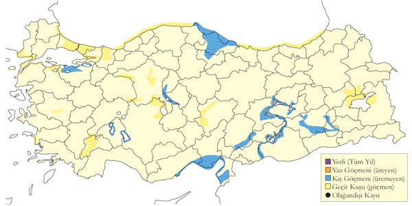
Üreme
Türkiye’de yuvalamaz.
Alttürler ve Sınıflandırma
Monotipik bir türdür.
Kızıldeniz Martısı
Ichthyaetus leucophthalmus, White-eyed Gull
Rastlantısal konuktur.
28 Mart 1988’de Marmaris’te görülen ilk kışındaki kuş, iyi tanımlanmış ve tek kaydını oluşturmaktadır (Kirwan & Martins, 1994). Yunanistan’dan 19. yüzyılın ortasından eski bir kaydı bulunmakta (Handrinos & Akriotis, 1997), ancak Kıbrıs’tan (Flint & Stewart, 1992) veya Lübnan’dan (Ramadan-Jaradi et al., 2008) kaydı yoktur.
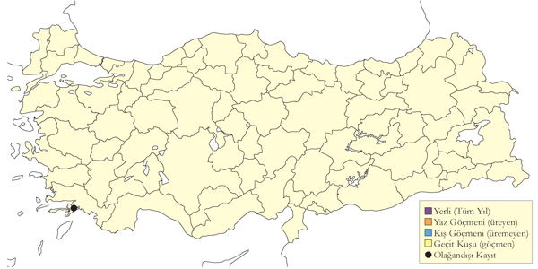
Üreme
Türkiye’de yuvalamaz.
Alttürler ve Sınıflandırma
Monotipik bir türdür.
Küçük Gümüş Martı
Larus canus, Mew Gull
Karadeniz kıyısında çok yaygın ve bol, diğer bölgelerde lokal ve seyrek kış konuğudur.
En erken ağustos ortası, en geç mayıs ortası arasında gözlenmiştir. Kışlama popülasyonunun 8000-12.000 olduğu düşünülmüş, bunun büyük çoğunluğu Karadeniz kıyısındadır. Marmara Denizi’nde nispeten düzenli, İstanbul Boğazı ve ilinde boldur, ancak varışı ilk soğuk hava dalgasının geldiği 15 Aralık bulur. Ege’de ara sıra ve çoğunlukla az sayıda görülür, istisnai olarak Büyük Menderes Deltası’nda Şubat 1972’de yaklaşık 200 tane gözlenmiştir. Akdeniz ve İç Anadolu bölgelerinde oldukça seyrek ve azdır, ancak burada da kasım ve şubat arasında bazı büyük baraj göllerinde azami 150 kuş görülebilir. Şubat 1997’de tüm Karadeniz kıyısı boyunca yapılan bir sayımda toplam 5279 tanesi sayılmıştır (Welch & Welch, 1998a).
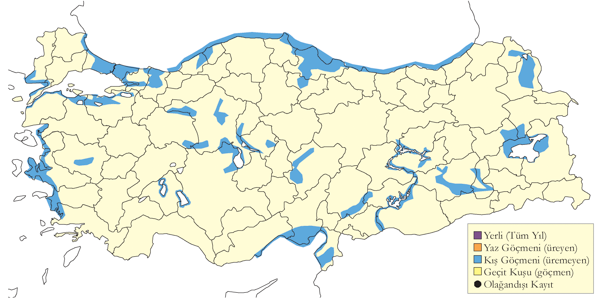
Üreme
Türkiye’de yuvalamaz.
Alttürler ve Sınıflandırma
Hem nominat canus, hem de heinei alttürünün bulunduğu düşünülür ve bu iki alttürün geçiş formları yaygındır (Malling Olsen & Larsson, 2003).
Büyük Kara Sırtlı Martı
Larus marinus, Great Black-backed Gull
Rastlantısal konuktur.
Sık görülen bir türdür. Kayıtları büyük çoğunluğu İstanbul, Kızılırmak Deltası ve Göksu Deltası’ndan gelir. İlk kez 10 Eylül 2005’te İstanbul’da görülen bir birey, 8 Kasım 2011’e kadar defalarca görülmüş, hatta 13 Ekim 2010’da iki erişkin ve bir genç gözlenmiştir. İç sularda 1979’da Eylül sonunda bir tane Keban Barajında (Ven, 1980)ve bir tane 14 Mayıs 1997’de Hirfanlı Barajı’nda (Kirwan et al., 2003) görülmüştür .
Kıyılarda rastlanır. ilk kez Gonzelbach tarafından İzmir’de ve Schrader de Mersin’de 23 Nisan’da 1880’lerin başında kaydedilmiş olup bu tarih ve yer, modern kayıtlarla uyumludur (Kumerloeve, 1961). 19. yüzyılın sonu veya 20 Yüzyılın başında erişkin bir erkek İstanbul Boğazı’nda toplanmış (Mathey-Dupraz, 1920–24), aynı yazara göre bu bölgeden 1888 ile 1894 arasında bazıları birçok birey ve biri Temmuz’da üç bireylik bir gruptan olan toplam 10 kayıt bulunmaktadır. Bir ergenin 23 Temmuz 1966’da Bursa Gemlik’te görüldüğü bahsedilmiş ancak detaylar verilmemiştir (Ganso & Spitzer, 1962).
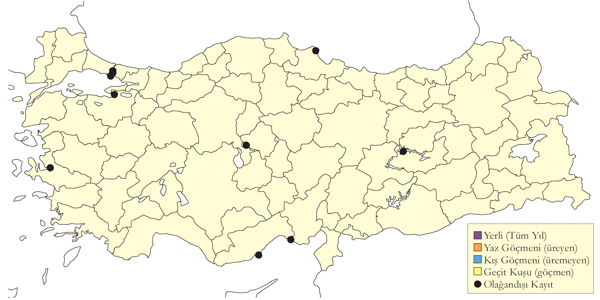
Üreme
Türkiye’de yuvalamaz.
Alttürler ve Sınıflandırma
Monotipik bir türdür.
Kutup Martısı
Larus hyperboreus, Glaucous Gull
Rastlantısal konuktur.
Güncel tek kaydı, 12 Aralık 2014’de Rize’de ilk kışındaki genç bir kuş bulunmuş ve ayrıntılı olarak belgelenmiştir. Bundan önceki tek kayıt bir tahnit örneği olup, genç bir dişi 23 Şubat 1874’de İstanbul Boğazı’nda toplanmıştır (Mathey-Dupraz, 1920–24). Aynı kaynakta Alléon’un İstanbul Boğazı’nda iki erişkin gördüğünü iddia ettiğinden de bahsedilir. Yakın çevrede sadece bugünkü İsrail ve Ürdün topraklarında 1914’te tek bir birey kaydı vardır (Andrews, 1995; Shirihai, 1996).
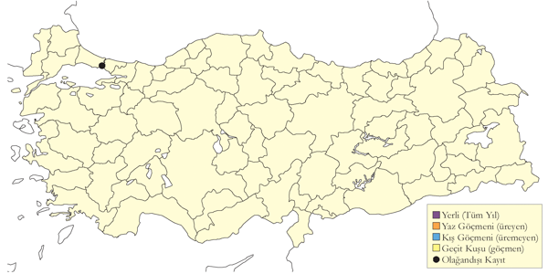
Üreme
Türkiye’de yuvalamaz.
Alttürler ve Sınıflandırma
Türkiye’de vurulmuş örneğin tahnitini incelenememiştir. Yayılış alanı dikkate alındığında nominat alttürün olduğu beklenir.
Kuzey Gümüş Martısı
Larus argentatus, European Herring Gull
Rastlantısal konuktur.
İlk kaydı Samsun Kurupelit Limanı’nda iki erişkin birey 30 Ocak ve 4 Şubat 2014 tarihinde tespit edilmiş ve ayrıntılı olarak fotoğraflanmıştır. Hemen ardından dikkatli bakan gözlemciler, 10 Ocak 2015’te İğneada’da ve 19 Ocak ve 4 Şubat 2015 arasında Samsun Marina’da birer erişkin kaydetmiştir.
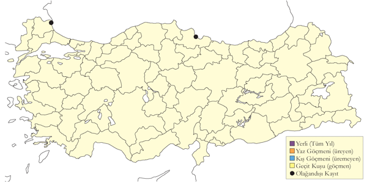
Üreme
Türkiye’de yuvalamaz.
Alttürler ve Sınıflandırma
Bu bireyin kanat desenlenmesine göre argentatus alttürüne ait olduğunu düşündürmektedir.
Hazar Martısı
Larus cachinnans, Caspian Gull
Karadeniz kıyısında yaygın ve bol, diğer bölgelerde lokal ve seyrek kış konuğudur.
Kışlayanların bir kısmının farklı coğrafi bölgelerden gelen, dolayısıyla farklı fenotip özellikleri gösteren bireyler olduğu düşünülmektedir. özellikle bilhassa Arabistan Yarımadası’nda kışladığını (Malling Olsen & Larsson, 2003). Geçit sırasında her iki form da özellikle batı ve orta bölgelerde yaygın olarak bulunur, ancak doğu bölgelerinde az sayıda rastlanır. İlkbahar geçişi mayıs sonuna kadar devam eder, sonbaharda ağustosta başlar.

Üreme
Türkiye’de yuvalamaz.
Alttürler ve Sınıflandırma
michahellis ve cachinnans formlarını tür olarak kabul etmiştir (Malling Olsen & Larsson, 2003). Karadeniz’in batı kıyılarında Romanya’daki kolonilerinde birbirine yakın bölgelerde ancak farklı habitatlarda yuvaladığını (Klein & Buchheim, 1997) göz önüne alarak burada iki farklı türden bahsedilebileceğini düşünüyoruz.
Gümüş Martı
Larus michahellis, Yellow-legged Gull
Yaygın ve çok sayıda bulunan yerlidir.
bütün kıyılarda toplam 22 kıyısal üreme alanının olduğunu teyit ederken bunların dışında 15 muhtemel veya olası üreme alanından bahseder (Eken, 1997c). Bu koloniler Doğu Karadeniz’de Giresun Adası’nda itibaren bütün kıyılar boyunca dolaşarak Doğu Akdeniz’deki Göksu Deltası açıklarına kadar yayılış gösterir. Çoğu koloni nispeten küçük olup 500 çiftten azdır, ancak İstanbul anakara popülasyonunun 3000-5000 çift, Adalar popülasyonunun azami 3000 çift olduğunu tahmin eder (Eken, 1997c). Beyşehir Gölü’nde küçük bir adada toplam 40-50 çiftten oluşmaktadır. Mayıs 1999’da bazı Van Gölü martısı ve iki türün arasında fenotiplerin görüldüğü fotoğraflar çekilmiş, 1964’de aynı yerde yaklaşık 40 çift bulunmuştur (Vauk, 1973). Ülkenin birçok yerinde, özellikle de kıyılar boyunca yaygın ve bol sayıda bulunur. Az sayıda iç bölgeler nehirlerde bulunur. Ortalama kışlama popülasyonu 100.000 ila 120.000 birey arasında olup birçok bölgede, özellikle Marmara ve Ege’de, örneğin Gediz Deltası’nda 40.000’i varan sayılarla, kalabalık gruplar görülebilir. Karadeniz kıyısında da kalabalık sürüler bulunur, örneğin Şubat 1997’de tüm Karadeniz sahili boyunca sayılan yaklaşık 34.000 kuş sayılmıştır.
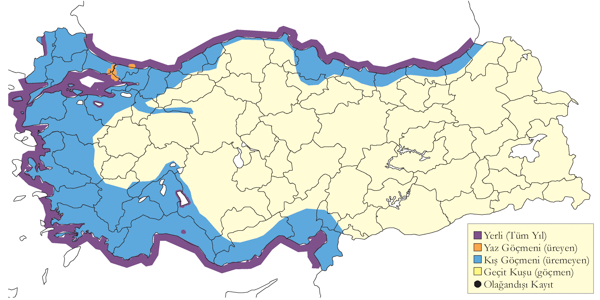
Üreme
Kıyıdan uzaktaki hem düz veya alçak, hem de dik ve kayalık olan kayalık ada ve adacıklarda, göllerdeki adalarda ve özellikle İstanbul’da bina çatılarında yuvalar. Yuva bitkisel maddeler, yosunlar ve çerçöpten oluşan büyük bir yığıntı olup orta kısmı çukur ve daha ince malzemeyle astarlıdır. Yumurta sayısı genellikle 2-3’tür: 3 (15 yuvada) 2 (11 yuvada), 1 (3 yuvada). AKD. En erken üreme kaydı, 28 Nisan 1972’de Anamur’da yaklaşık bir haftalık genç kuş olup ilk yumurtlama tarihinin 20 Mart olduğunu gösterir. Bu bölgeden diğer kayıtların arasında 5 Temmuz 1971’de Gelindere’de ve 13 Haziran 1992’de Aydıncık açıklarındaki bir adadaki çoğu palazlanmış yavrular olup son kayıt yumurtlama tarihinin mart sonu, nisan başı olduğunu gösterir. Mayıs 1964’de Beyşehir Gölü’ndeki iki yuvada birer yumurta, beş yuvada ikişer yumurta ve kalan 32 yuvada birer yumurta sayılmıştır (Vauk, 1973). EGE. 8 Mayıs 1950’de Çeşme yakınlarındaki açıktaki bir adada yuvalar (McNeile, 1950, 1951, 1954, 1967, 1968, 1970, 1972, 1973), 23 Nisan 2003’de Karine Gölü’ndeki adalardaki yuvalarda yumurta ve yeni çıkmış yavrular görülmüş olup, yumurtlama tarihinin 22 Mart civarında olduğunu gösterir. KAR. 11 Haziran 1975’de Giresun’da henüz uçmaya başlamış bir genç görülmüş olup, bu gözlem diğer bölgelerdeki tarihlerle örtüşmektedir. Ancak 10-11 Haziran 1975’de Perşembe, Ordu ve Giresun’daki kolonilerdeki erişkinler henüz yuvada oturmaktaydı. MAR. Temmuz ortasında İstanbul’da çatıda bulunan palazlanmış ve uçabilen iki yavru yumurtlama tarihinin nisan sonu olduğunu gösterir.
Alttürler ve Sınıflandırma
michahellis’in Beyşehir Gölü’nde Van Gölü martılarıyla karışık bir kolonide ürediğini bulmuştur (Liebers & Helbig, 1999).
Van Gölü Martısı
Larus armenicus, Armenian Gull
Lokal ve çok sayıda bulunan yarı göçmendir.
Günümüzde Doğu Anadolu’da, Aktaş, Balık, Çıldır, Nemrut, Sodalı ve Van göllerinde toplam altı kolonide, İç Anadolu’da Tuz Gölü’ndeki 450-500 çiftlik tek kolonide ve Beyşehir Gölü’ndeki küçük kolonide ürer. 2001’de Balık Gölü’nde 400-500 çift, Çıldır Gölü’nde 1100 çifttir (Magnin & Yarar, 1997). Beyşehir Gölü’ndeki koloni küçük ve istisnai olup, çok az sayıda gümüş martı ile karışık olarak ürer ve buradaki bazı kuşlar gümüş martılarla melezler olup üreme yetisine sahiptirler. En yüksek sayılar Van Gölü’ndeki koloni 1995’te 3450 çift olarak tahmin edilmiştir (Magnin & Yarar, 1997). Nemrut Gölü’nde son zamanlarda keşfedilen koloni 300 çiftten azdır.
1999 yazında Van, Tuz ve Beyşehir göllerindeki toplam 3 koloniyi ziyaret ettikten sonra Türkiye popülasyonunun yaklaşık 2400 çift olduğunu tahmin etmişlerdir (Liebers & Helbig, 1999). Popülasyonun bundan çok daha fazla olduğu neredeyse kesindir. Türkiye popülasyonu türün küresel ölçekte son derece önemlidir. Türkiye dışında Ermenistan’da Sevan ve Arpi göllerinde, İran’da Urumiye Gölü’nde ve Gürcistan’da yaklaşık 100-250 çift üremektedir.
Yüksek sayılarda üremeyen bireylerden oluşan kalabalık sürüler Doğu Anadolu’da, özellikle de Van çevresinde, batıda Diyarbakır (Bertault & Fremont, 1988) ve Elazığ’a kadar uzanan bölgede de, görülebilir. 1965’de Hazar Gölü’nde 70-100 çiftlik bir koloni bulunmuştur (Kumerloeve, 1967a). Benzer küçük kolonilerin keşfedildiğini beklediğini söyleyebiliriz.
Ortalama kışlama popülasyonu 8000-12.000 arasında olup, 2005 kış ortası sayımlarında 11.585 kuş sayılmıştır. Buna rağmen daha düşük sayımlar da nadir değildir, örneğin 1999 kışında toplam 1450 tanesi sayılabilmiştir. Çoğunluğu Fırat üzerindeki iki baraj gölünde, Karakaya ve Keban göllerinde, kışlamakta olup Karakaya Barajı’nda 2006 kışında 4300’den fazla sayılmıştır. Bu dönem bazıları Akdeniz kıyılarına, örn. Çukurova ve Göksu Deltası’na inerler, ancak buradaki sayılar değişkendir. Doğu’da da Iğdır Ovası gibi uygun ve daha ılıman iklime sahip alanlarda kışlayabilir. Ege ve Marmara kıyılarına çok seyrek olarak ulaşır. Karadeniz kıyılarında çok az sayıda bulunduğu tahmin edilir (Welch & Welch, 1998a), buna rağmen nispeten yüksek sayılarda sonbaharda toplandığı (Kumerloeve, 1967a) ve muhtemelen yaz ortasında da görüldüğü bilinmektedir.
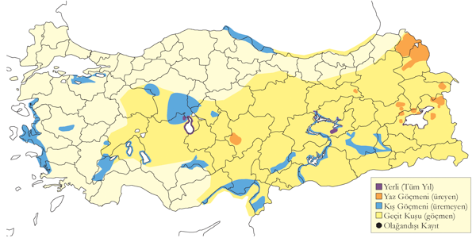
Üreme
Doğu Anadolu’daki en azından 2000 m rakımlı göllerinde hem çıplak hem de bitki örtülü adalarda çoğunlukla yerde koloniler halinde yuvalar. Kolonilerinin çoğunlukla kalabalıktır. Küçük adalarda tek çiftler halinde de yuvalayabilir, örn. 2001’de Nemrut Gölü’nde bulunmuş, Haziran 2004’de burada küçük bir adada 12 çiftin yuvaladığı tespit edilmiştir. Yuva boyu değişken olup muhtemelen çevrede bulunan malzemeye göre değişir. Yuva çoğunlukla ot ve bitki yığıntılarından oluşup, ortası çukurlu ve ince malzemeyle astarlıdır. Yumurta sayısı 2-3 olup çoğunlukla üçtür. DOA. 9 Haziran 2001’de Balık Gölü’ndeki yuvaların çoğunda yumurta olsa da bazılarında en fazla yaklaşık bir haftalık yavrular da görülmüştür. 30 Mayıs 1971’de Ahtamar Adası’nda yaklaşık 500 çift sayılmış, çoğu yuvada üç yumurta sayılmıştır. 8 Haziran 1975’de 1500 çift sayılmış bazılarında yavru ve yumurtalar da görülmüştür. 1 Haziran 1999’da sadece 15 çift ve yaklaşık 50 boş yuva sayılmış, boş yuvaların çoğunun bir yırtıcı hayvan tarafından tahrip edildiği sanılmıştır. Buradaki kuşların çoğu Çarpanak Adası’na taşınmış, 2 Haziran 1999’da burada yaklaşık 2000 çift sayılmış, yuvalarda çatlamak üzere olan veya çatlamaya hazır olan yumurtalar görülmüştür (Liebers & Helbig, 1999). 17-18 Haziran 1992’de Çıldır Gölü’nde üç adada yaklaşık 900 çift üremiş, 291 yavru sayılmış, bunların çoğu büyük olsa da henüz uçamamaktadır. Doğu Anadolu’daki kolonilerden biraz erken üremekte olduğu söylenebilir. Aynı yerde 28-29 Mayıs 1999’da kuzeybatı kıyısının 7 km açığındaki adalarda iki kolonide toplam 350-370 çift sayılmış, çiftlerin %95’inin yaşları 1 gün ile 3 hafta arasında değişen yavruları görülmüş, kalanının hala kuluçkada olduğu ve çoğu yuvada üç yumurta olduğu tespit edilmiştir (Liebers & Helbig, 1999). Bu kayıtlar ilk yumurtanın mayıs başında koyulduğunu gösterir ve bu Ermenistan’daki kolonilerden gelen verilerle tutarlıdır. Ermenistan’da yumurtadan çıkma dönemi Mayıs sonudur (Adamian & Klem, 1999). AKD. Beyşehir Gölü’nde Van Gölü martıları, gümüş martılarla karışık bir kolonide yuvalamıştır. 23-25 Mayıs 199’da toplam 40-50 çift sayılmış, bunların çoğunun yaklaşık 2 haftalık yavrusu varken üç çiftin yeni telafi yumurtaları koymuş olduğu gözlenmiştir. İÇA. 9 Mayıs 1993’de Tuz Gölü’ndeki çoğu yuvada üç yumurta ve bazılarında yumurtadan yeni çıkmış yavrular gözlenmiştir.
Alttürler ve Sınıflandırma
Monotipik bir türdür. İlk başta Larus taimyrensis’in alttürü olarak tanımlanan, daha sonraları sıkça kuzey gümüş martısının (Larus argentatus) ve tür olarak tanımlanmasından sonra gümüş martının alttürü olarak (Beaman, 1994) değerlendirilmiştir. Görünüşe göre Atlantik’ten ve Akdeniz havzası üzerinden erken zamanda gerçekleşen bir kolonizasyonun kalıntısıdır. Armenicus’un mitokondriyal DNA’sı görünüşe göre michahellis’e en yakın konumdadır (Liebers & Helbig, 1999).
Kara Sırtlı Martı
Larus fuscus, Lesser Black-backed Gull
Yaygın ve yer yer çok sayıda bulunan geçit türü, yaygın ve nadir kış konuğudur.
Kıyı boyunca yaygın ve az sayıda bir geçit kuşu olup ara sıra yüksek sayılarda gözlenir. Akdeniz Bölgesinde şubat sonundan mayıs sonuna kadar orta sayılarda bulunur, birkaç sefer 200’den fazla bireyden oluşan gruplara rastlanmıştır. İç Anadolu’da çok seyrek olup hep az sayıda rastlanmıştır. Karadeniz kıyısı boyunca ağustos ortasından mayıs sonuna kadar oldukça yaygın olup genellikle nispeten küçük sayılarda bulunurlar. İç bölgelerde küçük sayılarda gözlenmiştir. Daha yüksek sayılarda özellikle sonbahar geçişinde İstanbul Boğazında düzenli olarak kaydedilir, tek günde bazen 1750 kuş sayılmıştır. Doğu Anadolu’da seyrektir.
Kışlama nüfusunun 30-90 arasında olduğu tahmin edilir. 1999 Kış Ortası Su Kuşu Sayımlarında sadece tek kuş kaydedilmiş olsa da bu tür için uygun birçok alanda sayım yapılmamıştır. Marmara Bölgesi’nde İstanbul Boğazı ve çevresi dışında nispeten seyrek ve az sayıda rastlanır. Örneğin Şubat 1997’de bütün Karadeniz kıyısı boyunca yapılan sayımlarda toplam sekiz kuş sayılmıştır.
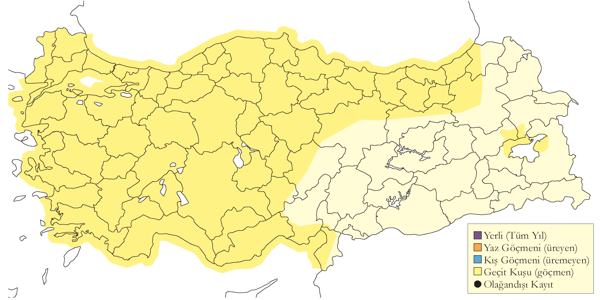
Üreme
Türkiye’de yuvalamaz.
Alttürler ve Sınıflandırma
Baltık Denizi kıyıları, Avrupa Rusya’sının kuzeybatısında üreyen ve başlıca Kuzeydoğu ve Doğu Afrika’da kışlayan (Malling Olsen & Larsson, 2003) nominat fuscus düzenli olarak bulunduğu kaydedilen alttürdür. Nadir olarak intermedius alttürü bulunabilir, nitekim geçit sırasında İsrail’de görülmüştür (Shirihai, 1996). Daha doğuda yuvalayan ve Sibirya martısı olarak da değerlendirilen heuglini alttürü kışın güney ve batı kıyılarında oldukça nadir olarak görülebilir.
Gülen Sumru
Gelochelidon nilotica, Gull-billed Tern
Lokal ve çok sayıda bulunan yaz konuğu, nispeten yaygın geçit türüdür.
Çeşitli sulakalan tiplerinde bulunur, bazen sudan uzakta rastlanabilir. Kulu Gölü’nde azami 1000 çift ve son yıllarda azami 450 çift, Seyfe Gölü’nde azami eskiden 1000, son zamanlarda 500 çift üremektedir. Ege Bölgesi’nde birçok küçük kolonisi bulunur. Doğu Anadolu’da en büyük koloni Bulanık Ovası’nda yuvalayan azami 300 çifttir. Az sayılarda Van Gölü havzasındaki diğer alanlarda yuvalar.
Eskiden Ereğli Sazlığı’nda azami 200 çift, Karapınar Ovası’nda 80 çift üremiştir, buradaki sulakalanların kurutulması ve doğa bozunumu nedeniyle artık ürememektedir. 50 çiftten az sayıda birkaç alanda daha üremiş ve üremektedir.
Ülke çapında genellikle az sayıda ve yaygın geçit türüdür. Meriç Deltası’nda mayıs başı ve ağustos sonu arasında görülür. Akdeniz Bölgesi’nde mart başından itibaren bulunur, sonbaharda ağustos ortası ve ekim arasında bulunur. Karadeniz Bölgesi’nde nadir ilkbahar ve sonbahar göçmenidir. Nadiren tek bireyler Ege ve Akdeniz ve hatta Karadeniz bölgelerinde kışlayabilir.
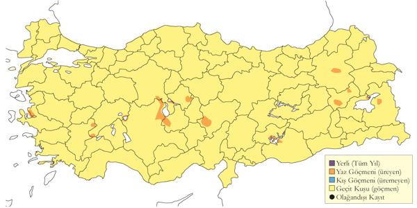
Üreme
Tuzlu ve acı göllerdeki adalarda, nehirlerdeki kum ve çakıl adalarında koloniler halinde yuvalar. Koloniler genelde 80-300 çift arasında, azami Kulu Gölü’nde 2 Temmuz 1971’de yuvalayan 1000 çift sayılmıştır (Kasparek, 1987). Kolonileri bazen Akdeniz martısı, ince gagalı martı ve karabaş martı, sumru ve küçük sumru gibi diğer türlerle mesafeli bir birliktelik içindedir. Yuvası çıplak zemine sığ bir çukur olup yakındaki otlar ve bitki örtüsü ile cılız olarak astarlanır. Yumurta sayısı 2-3, çoğunlukla 3 yumurta koyar, nadiren tek yumurta koymuştur. İlk yumurtalar nisan sonu ve mayıs başında konur, ilk yavrular mayıs ortasında yumurtadan çıkar; iri ve uçmaya hazır yavrular haziran sonu itibariyle görülür. Bu tarihler ana kolonilerde az çok sabittir. İÇA. İçinde yumurta olan yuvalar haziran ortasında Seyfe Gölü’nde, haziran sonunda Bolluk Gölü ve hatta temmuz ortasında Kulu Gölü’nde görülmüş ve bunların çoğunun telafi çabaları olduğu sanılmıştır. DOA. EGE. Üreme tarihleri kararlıdır, erişkinler mayıs ortasında kuluçkada olurlar ve yeni palazlanana yavrular haziran sonu ve temmuz başında görülürler.
Alttürler ve Sınıflandırma
Türkiye’de nominat alttürü bulunur.
Hazar Sumrusu
Hydroprogne caspia, Caspian Tern
Lokal ve az sayılarda yaz konuğu, nispeten yaygın geçit türü ve lokal kış konuğudur.
Tuzlu sulakalanlarda bulunur. Ege’de Gediz ve Büyük Menderes Deltası’nda, İç Anadolu’da da Tuz Gölü’nde yuvalar. Tuz Gölü’ndeki koloni azami 25 çiftten birkaç çifte azalmıştır. Van Gölü havzasında ve Bulanık Ovasında az sayılarda düzensiz olarak yuvalar. Son zamanlarda Güney Keban Baraj Gölü’ndeki adalarda 2000 yılında 25 çiftin yuvaladığı saptanmıştır (Eken vd. 2006).
Geçit sırasında ülke çapında daha yaygın ancak gene de az sayılarda görülür. Özellikle kıyısal alanlarda, nadiren iç sularda bulunur. Finlandiya’da halkalanmış bir birey Ege kıyılarında bulunmuştur (Kasparek, 1992). Karadeniz kıyısında oldukça nadirdir. İlkbaharda oldukça nadir, sonbaharda ağustos ekim arasında seyrektir. Kışın ise az sayılarda Ege ve Akdeniz’deki nehir deltalarında, en sık olarak da Adana sulakalanlarında bulunur (Eken, 1997d). Adana Tuzla Gölü’nde 20 Ocak 2005’de 23 tane sayılmıştır.
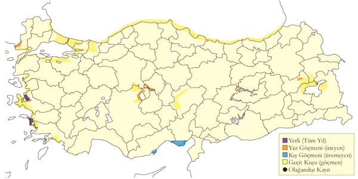
Üreme
Küçük koloniler halinde tuzlu göllerin çıplak veya deniz kabuğu ile örtülü alçak adalarda yuvalar. EGE. Gediz Deltası’nda 1995’de dört ayrı kolonide toplam 103 çift üremiştir (Eken, 1997a). Bazı koloniler sık ve derli topludur, birkaç çift birbirine yakın bulunur, diğer koloniler dağınık olabilir ve yuvaların arasında birkaç metre bulunabilir. Yuvası sığ bir çukur olup ya astarsız ya da bitki çerçöpünden cılız astarlıdır. 2003 yılında Büyük Menderes Deltası Karina Gölü’ndeki küçük bir adada toplam 28 çift iki sıkışık grupta yuvalamış, 23 Nisan’da üç yuvada üç yumurta, 10 yuvada 1-2 yumurta ve 10 tane yeni kazılmış boş yuva görülmüş, 9 Mayıs’ta dokuz yuvada üç yumurta, 17’sinde iki yumurta ve iki yuvada birer yumurta, toplam 28 yuvada ortalama 2,2 yumurta sayılmıştır. Aynı yerde 27 Haziran 1999’da geç bir yuvada iki yumurta sayılmış, bunun telafi çalışması olduğu düşünülmüştür. 26 Mayıs 2004’de tüm yuvalarda yumurta olduğu gözlenmiştir. İÇA. Tuz Gölü’nde Mayıs 1969’da 15 çift yuvalamış, 13 yuva iki tane, kalan yuvalarda 3 yumurta bulunmuş, 31 Mayıs 1971’de toplam 19 yuvanın her birinde 2-3 yumurta veya yavru görülmüş, toplam 12 yavrunun en büyüğü yaklaşık 8 günlük olduğu düşünülmüş ve ilk yumurtlama tarihi 2 Mayıs olarak hesaplanmıştır. Erişkinlerin de 28 Mayıs 1974’de oldukça dağınık konumlanmış yuvalarda kuluçkada oldukları, sadece bir yuvada yumurtadan yeni çıkmış tek bir yavru görülmüştür (Pforr & Limbrunner, 1982).
Alttürler ve Sınıflandırma
Monotipik bir türdür.
Tepeli Sumru
Thalasseus bengalensis, Lesser Crested Tern
Rastlantısal konuktur.
Üç kaydı vardır: 28 Mayıs 1973’te Göksu Deltası’nda oldukça iyi şekilde gözlenen ancak, yüzeysel tanımlı, ilk yaşını süren bir birey (Witt, 1976); 5 Haziran 2003’te yine Göksu Deltası’nda bu kez denizde hızla uçarken gözlenen, ancak hakkında ayrıntılı bilgi olmayan bir birey; 13 Mart 2004’te Küçük Menderes Deltası’nda gözlenen ve kısa tanımı mevcut birey (Balmer & Betton, 2004b). Dördüncü kayıt, Belek Eleri sahilinde 26 Aralık 2004’de görülen bir kuş olup ayrıntılı tarifi mevcuttur (A.-A. Weller).
Tür üremeksizin Eilat’da (İsrail) düzenli ancak nadir bahar ve yaz konuğu olarak kaydedilir (Shirihai, 1996). Ürdün’de de iki kere kaydedilmiştir (Andrews, 1995). Önceden Lübnan sahili açıklarındaki bir adada üremiştir (Ramadan-Jaradi & Ramadan-Jaradi, 1999). Yunanistan’dan, hepsi 1987 ve sonrasına ait yakın zamanlı üç kayıt vardır (Handrinos ve Akriotis 1997).
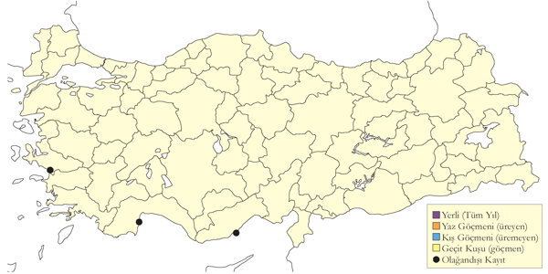
Üreme
Türkiye’de yuvalamaz.
Alttürler ve Sınıflandırma
Türkiye kayıtları alttür düzeyinde tanımlanmamıştır. Akdeniz’de yuvalayan emigratus alttürünün bulunması olasıdır.
Kara Gagalı Sumru
Thalasseus sandvicensis, Sandwich Tern
Lokal ve az sayıda üreyen, tüm yıl görülen yaygın ve çok sayıda bulunan konuktur.
1980’lerin ortasında Gediz Deltası’nda az sayıda ürediği keşfedilmiştir. Son zamanlarda da Hersek Lagünü’nde 6 çiftin ürediği saptanmıştır. Bunun dışında, kıyı bölgelerinde oldukça yaygın ve seyrek olmayan geçit türüdür. Ülkenin ortasında ve batısında çok az sayıda kışlar. Marmara’da eylül sonundan nisan başına kadar kaydedilir. En yüksek sayıda bireyin gözlendiği kayıtların ayrıntıları şöyledir: Ocak 1972’de Büyükada ile Yalova arasında yaklaşık 450 birey; Mart 1974 ve Kasım 1970’de Büyükçekmece’de sırasıyla 231 ve 150 birey ve Ocak 1987’de Kavak Deltası’nda 170 birey. Karadeniz’de eylül sonundan nisan başına kadar, genellikle az sayıda kaydedilir. Kızılırmak Deltası ile Samsun civarında ise düzenli görülür ancak genellikle 100 bireyden az kaydedilir. Ege’de genellikle ekim sonundan mayıs sonuna kadar görülür. Çoğunlukla az sayıda kaydedilir ancak 1972’de Büyük Menderes Deltası’nda yaklaşık 100 birey gözlenmiştir. Akdeniz’de kasım başından mart sonuna dek görülür. Genellikle az sayıda kaydedilse de yaklaşık 50 bireyin gözlendiği de olmuştur.
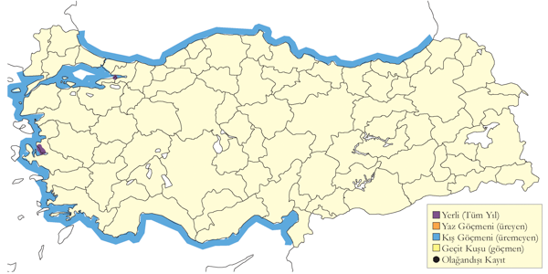
Üreme
EGE. Gediz Deltası’nda 1984-88 yıllarında, deltanın tuzlu lagünlerinde yer alan, Akdeniz martısının (Larus melanocephalus) da ürediği adalarda ürediği doğrulanmıştır. 1996 Mayıs’ının başında, sözü geçen kolonide, 53 çift kara gagalı sumru ve 97 çift Akdeniz martısı kaydedilmiştir (Eken, 1997a). MAR. Son yapılan araştırmada Yalova Hersek Lagünü’nde birkaç çiftin ürediği tespit edilmiştir. Türkiye’de veri yoktur, ancak diğer bölgelerde kolonilerin yoğun olduğu ve yuvaların birbirine 0,5 m’den daha yakın olduğu bilinmektedir. Yere, astarsız sığ bir deliğe yuvalar. Olağan kuluçka sayısı ikidir, ancak nadiren yılda bir kere de kuluçkaya yatabilir. Yumurtalar çoğunlukla mayısta koyulur.
Alttürler ve Sınıflandırma
Türkiye’de nominat alttürü bulunur.
Küçük Sumru
Sternula albifrons, Little Tern
Lokal ve yer yer çok sayıda bulunan yaz konuğudur.
Başta sahiller ve iç kesimlerdeki lagünlerde, genellikle nisan ortası ile eylül sonu arasında görülür. En büyük koloniler Meriç Deltası (200 çift) Büyük Menderes Deltası (300 çift), Gediz Deltası (205 çift) Seyfe Gölü (500 çift) ve Çukurova’da (yaklaşık 300 çift) bulunur. Kızılırmak Deltası’nda 1992’de çoğu nehir kıyısında olmak üzere 40-45 çift kaydedilmiştir. Güneydoğu Anadolu’da 1973’te, Birecik’te 34 çift gözlenmiş, ancak sonrasında üreme kanıtına rastlanmamıştır. Türün bu bölgede ürediği ancak 1990’ların sonunda, başta Dicle olmak üzere nehir boyunda birkaç noktada keşfedilmiştir.
Geçit sırasında, özellikle mayıs ve eylül aylarında daha yaygın yayılışlıdır. Genellikle az sayıda görülse de sonbaharda Karadeniz’in doğusu ile Akdeniz’de, belirgin sayılarla kaydedildiği olmuştur.
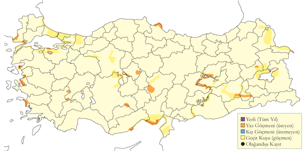
Üreme
Sahiller ile iç kesimlerdeki göl ve nehirlerde bulunan adalarda ve kum tepelerinde ürer. Büyüklüğü değişken kolonilerde en az 2-3 çift bulunur. Sultansazlığı’nda 67 (Kasparek 1985); 1987’de Çukurova’da, tüm kıyı lagünlerine eşit dağılmış olarak 270 çift kaydedilmiştir (Have et al., 1988). Çıplak kum, çakıl ya da kuru çamur içine, sığ bir çukura yuvalar. Türkiye’de gözlenen yumurta sayısı genellikle üç (91 yuvada), ya da iki (16 yuvada) kere, nadiren bir (4 yuvada) kere kuluçkaya yatar. Üreme çoğunlukla mayısın ikinci yarısında ya da haziranda başlar. AKD. En erken üreme kayıtları Çukurova’dan bildirilmiştir. 9 Mayıs 1989 ve 11 Mayıs 1990’da, içinde tamamlanmış kuluçkayı gösterir şekilde üç yumurta olan birçok yuva kaydedilmiştir. EGE. Büyük Menderes Deltası Karine Gölü’nde 9 Mayıs 2003’te, henüz yuvalamıyor olsa da üreme alanında bulunan erişkinler gözlenmişti. Aynı yerde 14 Mayıs 2007’de, küçük bir çakıl adasında yaklaşık 20 yeni ama boş yuva kazıntısı, tamamlanmamış kuluçkayı gösterir şekilde içinde bir yumurta olan 16 yuva, içinde iki yumurta olan 1 yuva bulunmuştur ve bu yuvaların birkaçının, aralarında sadece 1 m olacak şekilde birbirine olağandışı yakınlıkta olduğu gözlenmiştir. 26 Haziran 1999’da, Büyük Menderes Deltası’nın başka bölgelerinde, içinde yumurta bulunan iki yuva ile içinde yeni tüylenmiş bir yavru bulunan diğer bir yuva bulunmuş, 25 Mayıs 2004’te ise kıyı lagünlerinde kuluçkaya yatmış birkaç erişkin gözlenmiştir. MAR. 2 Haziran 1966’da Uluabat Gölü’nde yaklaşık 15 çiftten oluşan bir kolonide içinde yumurta olan dört yuva kaydedilmiş, 16 Eylül 1995’de ise Kocaçay Deltası’nda yavrularını besleyen bir çift gözlenmiştir (Ertan, 1996). İÇA. 3 Haziran 1982’de Sultansazlığı’nda, içinde 2-3 yumurta bulunan 50 yuva, içinde bir yumurta bulunan bir yuva ve içinde yeni tüylenmiş yavru bulunan iki yuva kaydedilmiştir (Kasparek, 1985). Aynı bölgede 2 Haziran 1971’de Seyfe Gölü’nde, içinde 2-3 yumurta bulunan 48 yuva (Husband & Kasparek, 1984); 19 Haziran 1992’de ise Kulu Gölü’ndeki bir adada, içinde iki yumurta olan bir yuva kaydedilmiştir. AKD. 30 Nisan 1970’de Silifke yakınında çiftleşme öncesi kur davranışı gözlenmiştir. Göksu Deltası’nda ise, 26 Mayıs 1998 ile 11 Haziran 1992’de kuluçkaya yatmış erişkinler; 9 Haziran 1974’te her birinde üç yumurta olan dört yuva ve 16 Haziran 1974’te içinde yeni tüylenmiş yavru olan altı yuva kaydedilmiştir (Witt, 1976). Yine aynı yerde 8 Haziran 1999’da, yumurtaların mayıs başında koyulduğunu gösterir şekilde yeni tüylenmiş iki yavru gözlenmiştir. KAR. Kızılırmak Deltası’nda çiftlerin 9 Haziran 1992’de üremeye henüz başladıkları not edilmiştir (Hustings & Dijk, 1994). DOA. 2 Temmuz 2005’de Malatya’daki Karakaya Barajı’nda gençleri besleyen 5-10 çift kaydedilmiştir.
Alttürler ve Sınıflandırma
Türkiye’de nominat alttürü bulunur. Çok yakın bir geçmişe kadar genellikle Sterna cinsi içinde sınıflandırılmıştır, ancak kısa süre önce elde edilen genetik bulgular, bu tür ile birlikte S. antillarum ve S. saundersi’nin de kendi cinsleri içinde değerlendirilmeleri gerektiğini öngörmektedir (Ibis 147: 821-826) (Collinson et al., 2006).
Sumru
Sterna hirundo, Common Tern
Yaygın ve çok sayıda bulunan yaz konuğu ve geçit türüdür.
Kıyı kesimlerinde ve başta Manyas Gölü’nde (500 çift), Gediz Deltası’nda (2150 çifte kadar), Göksu Deltası’nda 100 çifte kadar), İç Anadolu (kolonilerin çoğunda 50-100 çift) ve Doğu Anadolu olmak üzere ülkenin iç kesimlerindeki çeşitli sulakalanlarda bulunur.
Sonbahar başta olmak üzere geçit sırasında daha bol ve daha yaygın yayılışlıdır. Sonbahar geçişi en azından ağustos başından ekim ortasına kadar sürer. Geçişin en yoğun olduğu dönem, Doğu Karadeniz’de de bazen yüksek sayılarla kaydedildiği eylül ayıdır. Geçiş daha nadiren kasım ortasına dek gözlenir. Mart ortasında başlayan bahar geçişinde aynı bollukta görülmez.
Çoğunlukla Karadeniz’den seyrek kış kayıtları vardır. Aralık sonu ile şubat başı ve ortasında Akdeniz’de kaydedilmiş kuşların da, geç ya da erken göçmenlerden çok kışlayan bireyler olmuş olması mümkündür.
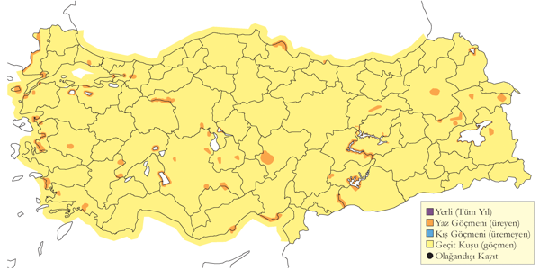
Üreme
Koloniler genellikle 80 çiftten daha az olsa da, 1966’da Manyas Gölü’nde kaydedildiği gibi 500 çifte kadar büyüklerine de rastlanmıştır. En önemli üreyen popülasyon, 1996 yılında tahminen 2150 çift olarak hesaplanan Gediz Deltası’ndakidir (Eken, 1997a). Nadiren yalnız, bazen gülen sumru (Gelochelidon nilotica) ve küçük sumru (Sternula albifrons) gibi diğer türlerle yakın ilişki içinde ürer. Hem kıyı, hem de iç kesimlerdeki göllerde, su basmış bölgelerde, nehir kıyılarında ve kıyıya yakın adalarda; çoğunlukla kum, çamur ve çakıldan oluşan alçak adalarda yuvalar. Uluabat Gölü’nde yüzen bitkilerin içinde yuvaladığı da kaydedilmiştir (Welch & Welch, 1998b). Genellikle yerde, astarsız ya da yakındaki bitkilerle astarlanmış bir çukurda yuvalar. Türkiye’de gözlenen yumurta sayısı 3, nadiren 2. İÇA. 2 Haziran 1971’de Seyfe Gölü’nde 60 çiftten oluşan kolonide yapılan gözlemde yumurtaların yaklaşık 10 Mayıs’ta koyulduğunu gösterir şekilde 48 çiftin yuvasında yumurta, geri kalan çiftlerin yuvalarında da yavruların olduğu kaydedilmiştir (Husband & Kasparek, 1984). 26 Temmuz 1971’de Yarma’da hala kuluçkada olan çiftler gözlenmiştir. 29 Mayıs 1999’da Çavuşçu Gölü’ndeki bir adada 100 çiftin yuvaladığı gözlenmiştir. MAR. 19 Haziran 1973’te Büyükçekmece’de, yumurtaların mayıs başında koyulduğunu gösterir şekilde 4 tüylenmiş yavru gözlenmiştir. 2 Haziran 1966’da Uluabat Gölü’nde yaklaşık 30 çiftten oluşan bir kolonide içinde yumurta bulunan 4 yuva kaydedilmiştir. Ayrıca, 14 Mayıs ve ardında içinde yumurta bulunan yuvalar kaydedilmiş, 11 Temmuz 1966’da ise Kocaçay Deltası’nda tüylenmiş yavru gözlenmiştir (Ertan, 1996). EGE. 14 Mayıs 2007’de Karine Gölü’nde yapılan gözlemde, üremenin hala ilk aşamalarda olduğunu gösterir şekilde yalnızca bir yumurtası olan tamamlanmamış kuluçkaya sahip 2 yuva kaydedilmiş; 27 Haziran 1999’daki gözlemde ise çiftlerin çoğunun farklı gelişim seviyesinde yavruya sahip olduğu, ancak birkaç yuvada halâ yumurta bulunduğu kaydedilmiştir. (McNeile, 1950, 1951, 1954, 1967, 1968, 1970, 1972, 1973), 23 Mayıs 1950’de Aliağa yakınındaki bir adacıktan 2 yumurta toplamıştır. AKD. Göksu Deltası’nda erişkinlerin 15 Mayıs’tan itibaren kuluçkaya yattıkları gözlenmiş, 19 Mayıs 1999’da ise Akgöl’de yaklaşık 100 bireyin kum şeridi üzerinde kuluçkada olduğu kaydedilmiş, temmuz başında ise tüylenmiş yavrular gözlenmiştir. DOA. Mayıs sonunda Erçek Gölü’nde, haziran başında ise Malatya’daki Murat Nehri’nde ve Karakaya barajındaki çakıl adalarında, kuluçkada olan erişkinler gözlenmiştir. KAR. 10 Haziran 1975’te Fatsa’da, açıktaki bir küçük adacıkta üremekte olan 30-50 çift kaydedilmiştir. Geç tarihlerde kaydedilen yumurtalı yuvalar büyük olasılıkla kaybedilen kuluçkaların yerine yenisinin yapıldığını göstermektedir.
Alttürler ve Sınıflandırma
Orta Asya’da bulunan tibetana alttürüne benzer kuşların Ortadoğu’da görüldüğüne dair iddialar olmuşsa da, büyük olasılıkla Türkiye’de görülenlerin hepsi nominattır.
Kutup Sumrusu
Sterna paradisaea, Arctic Tern
Rastlantısal konuktur.
Altı kaydı vardır. Kayıtların ayrıntıları şöyledir: 27 Mayıs 1915’te Marmara Denizi’nden alınan iki erişkin (Mathey-Dupraz, 1920–24); 4 ve 5 Eylül 1959’da Boğazlar’da gözlenen, sırasıyla, 1 ve 2 birey (Ballance & Lee, 1961); 25 Mayıs 1969’da Van Gölü yakınındaki Ahlat’ın 2 km batısında fotoğraflanan 4 birey (OST, 1972); 1 Mayıs 1970’te Ağrı ilindeki Taşlıçay ve Yoncalı ilçeleri arasında gözlenen 2 birey (OST, 1975). Yakın tarihli kayıtlar ise, 27 Nisan 1996’da, Dalyan’da İztuzu kumsalı açıklarında gözlenen birkaç birey ile (Kirwan & Martins, 2000), 12 ile 27 Mayıs 2005 arasında Bodrum yakınındaki Tuzla Milas’ta en fazla 4 olarak sayılan bireylerdir. 1971 yılı Temmuz sonunda Karadeniz’den bildirdiği kayıtlar (Renkhoff, 1972) ve kanıtsız görülmüş ve reddedilmiştir (Kasparek, 1992). Tür, Kıbrıs ve İsrail’de de rastlantısaldır (Porter et al., 1996). Yunanistan’da en az sekiz kere kaydedilmiştir (Handrinos & Akriotis, 1997).
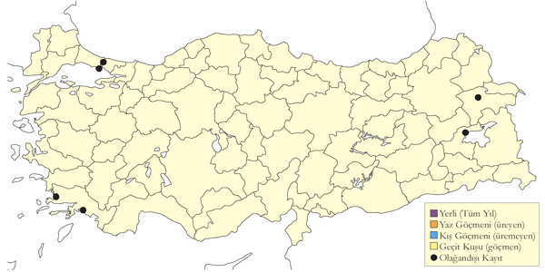
Üreme
Türkiye’de yuvalamaz.
Alttürler ve Sınıflandırma
Monotipik bir türdür.
Bıyıklı Sumru
Chlidonias hybrida, Whiskered Tern
Yaygın ve çok sayıda bulunan yaz konuğu ve geçit türü, lokal ve az sayıda kış konuğudur.
Genellikle nisan sonundan ağustos sonuna ya da eylüle dek görülür. Batı ve iç bölgelerdeki sulakalanlarda, çoğunlukla yüksek sayıda kaydedilir. Meriç Deltası’nda 500 çift, Sultansazlığı’nda ise 400 çift barındıranlarına rastlanmıştır. 1998’de Uluabat Gölü’nde, hepsi nilüfer yapraklarının üzerinde olmak üzere en az 660 yuva kaydedilmiş, bir koyda sık nilüferler arasında bir arada üreyen 392 çift gözlenmiştir (Welch & Welch, 1998b). Söz konusu nokta, uzun süreden beri ve düzenli olarak kullanılan bir üreme noktasıdır.
Ülke genelinde geçit sırasında sık görülür, en yüksek sayılara batı ve orta bölgelerde rastlanır. Bahar geçişi en azından nisan sonundan haziran başına dek sürer. Akdeniz’de en erken 30 Mart’ta görülmüştür. Sonbahar geçişi ise ağustosun ortasında başlar ve eylül sonuna dek devam eder. Geçişin ender olarak ekim ortasına dek sürdüğü gözlenmiştir.
Kışın az sayıda Ege ve Akdeniz kıyılarındaki lagün ve göllerde görülebilir.
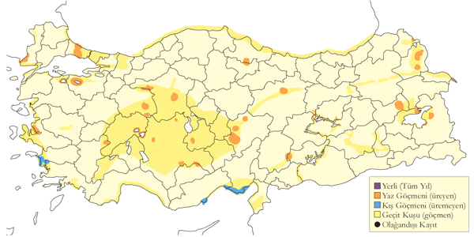
Üreme
Göllerin, nilüfer gibi suda büyüyen bitkilerin olduğu korunaklı bölgelerinde, kolonilerde ürer. Koloniler büyük olabilir. İÇA. Daha küçük koloniler kaydedilmiştir. Örneğin 2 Haziran 1972’de Gönenç Gölü’nde 10 çift, 27 Mayıs 1975’te Hotamış’ta 30 çift ve Çavuşçu Gölü’nde 100 çift kaydedilmiştir (Magnin & Yarar, 1997). Saz ve diğer sucul bitkilerinden oluşan küçük bir yığının, yüzen nilüferlerle iç içe geçirilmesinden oluşan bir yuvası vardır. Yuvalardaki yumurta sayısının bildirildiği kayıtlar şöyledir: 2 Haziran 1975’te Sultansazlığı’nda birinde 1, diğerinde 3 yumurta olan 2 yuva (Kasparek, 1985). 22 Temmuz 1981’de Sultansazlığı’nda, yumurtaların çoğunun haziran başında koyulduğunu gösterir şekilde yeni tüylenmiş yavrular kaydedilmiştir (Kasparek, 1985). Yine aynı bölgede, 25 Temmuz 1971’de Yarma yakınında ve 3 Ağustos 1971’de Akşehir Gölü’nde yeni tüylenmiş yavrular gözlenmiştir. MAR. 2 Haziran 2006’da ise Uluabat Gölü’nde ikisinin içinde 2, diğer ikisinin içinde ise 3 yumurta bulunan 4 yuva kaydedilmiştir. Diğer bölgelerde olağan yumurta sayısı 3’tür (nadiren 2-4). Koloniler, mayıs ortasından itibaren aktiftirler. 2/3 Haziran 2006’da Uluabat Gölü’nde yuva malzemesi taşıyan birçok erişkin, 28 Haziran 1973’te ise yavrularına yiyecek taşıyan erişkinler gözlenmiştir.
Alttürler ve Sınıflandırma
Türkiye’de nominat alttürü bulunur.
Ak Kanatlı Sumru
Chlidonias leucopterus, White-winged Tern
Çok lokal ve az sayıda yaz konuğu, oldukça yaygın ve çok sayıda bulunan geçit türüdür.
Özellikle doğu bölgeleri boyunca sulakalanlarda yaz boyunca görülür (Kasparek, 1992), İç Anadolu ve Doğu Anadolu’da üremenin pek de nadir olmadığını düşünmüştür. Nitekim 2010 yılında 17 Haziran 2010’da Erzurum Ovası’nda yaklaşık 400 kuşun ürediği düşünülmüş, kuşlar gagalarında yiyecekle belirli noktaları ziyaret ettiği ve bataklıkta uzun vakit geçirdiği gözlenmiştir. Ancak gözlemciler koloniye ulaşamamıştır. Ardından aynı gözlemciler Haziran ortasında Doğubayazıt’ta 5000 kuş ve Çaldıran Ovası’nda 1000 kuş gözlemişler.
Her iki mevsimde de, ancak özellikle bahar geçişi sırasında boldur. Bahar geçişi nisan ortasından haziran başına kadar sürer. Özellikle güneyde ve doğuda en yoğun geçiş nisan sonundan mayıs ortasına kadar kaydedilir. Göçmenler kuzeyde genellikle güneye göre iki haftaya kadar daha geç görülürler. Erişkin olmayanlar erişkinlere göre daha geç geçiş yapma eğilimindedirler. En yoğun geçiş eylül sonu olmak üzere, sonbaharda temmuz ortasından ekim ortasına dek kaydedilir. İç Anadolu’da 25 Ekim’de, Akdeniz’de ise 21 Ekim’de gözlenen bireyler bu mevsime ait en geç kayıtlardır. Ülkenin batı ve orta bölgelerinde sürülerin nadiren 100 bireyden fazladır. Doğuda birkaç bin civarındaki sayımlara bile düzenli olarak rastlanmaktadır (Berk et al., 1993): 13 Mayıs 1993’te Erzurum Ovası’nda 15.000-20.000 (Faldborg, 1994)ve 6 Mayıs 2004’te Sodalı Gölü’nde 11.500 birey kaydedilmiştir.
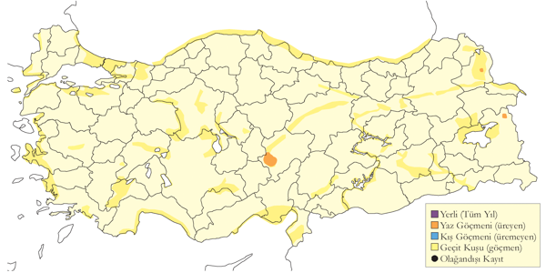
Üreme
Düzensiz ürediği düşünülür. İÇA. 5 Temmuz 1969’da Mogan Gölü’nde tamamen tüylenmiş 1 genç, 31 Temmuz 1969’da ise Temelli’de 3 genç gözlenmiştir ki, bu gençlerin bu noktada yumurtadan çıkmış olmaları mümkündür. 19 Haziran 1975’te de Seyfe Gölü’nde 1 çift, 2 erişkin ve 3 yavru kaydedilmiştir (Husband & Kasparek, 1984). KAR. 16 Haziran 1983’te Yeniçağa Gölü’nde 2 erişkin ve 1 tüylenmiş yavru kaydedilmiş (Kılıç & Kasparek, 1987), 17 Temmuz 1992’de ise Kızılırmak Deltası’nda gençleri beslemekte olan erişkinler gözlenmiştir (Hustings & Dijk, 1994). DOA. 17 Temmuz 1986’da Haçlı Gölü’nde 3’ü genç olmak üzere toplam 9 birey gözlenmiştir ancak bu gençlerin Türkiye’de yumurtadan çıktığına dair herhangi bir kanıt yoktur. 4 Haziran 2002’de ise Doğubayazıt yakınındaki Saz Gölü’nde, küçük kolonilere ait olduğu düşünülen 150 birey gözlenmiştir. Aynı yerde 28 Mayıs 2003’te yaklaşık 100 erişkin kaydedilmiştir, ancak söz konusu iki gözlemde de üremeyi gösteren kesin bir kanıt elde edilememiştir. 10 Haziran 2005’te üreme için uygun habitatın bulunduğu Malatya yakınındaki Karakaya Barajı’nda, yaklaşık 20 erişkin gözlenmiştir. Yine aynı yerde 18 Temmuz 2005’te, 10-15 tanesi gençlerden oluşan 35’in üzerinde birey kaydedilmiş, gençlerin bir kısmının erişkinler tarafından beslendiği de not edilmiştir. Türün ürediğine dair kesin kanıt olmadığı için gözlenen bu bireylerin söz konusu alanlarda sadece kısa süre ile kalan geçit kuşları oldukları düşünülmektedir. Üreme kolonilerinde kuşlar 2-3 ay boyunca kalırlar. Bu süre içinde gürültülü ve dikkat çekici oldukları için fark edilmemeleri mümkün değildir.
Alttürler ve Sınıflandırma
Monotipik bir türdür.
Kara Sumru
Chlidonias niger, Black Tern
Çok lokal yaz konuğu, yaygın ve az sayıda geçit türüdür.
Marmara’nın bazı bölgelerinde ve muhtemelen İç Anadolu’da ürer. Herhangi bir kanıt olmamasına rağmen, Doğu Anadolu’da da ürediği tahmin edilmiştir (Kasparek, 1992). Meriç Deltası’nda üreyen koloni 250 çiftten oluşmaktadır.
Genellikle makul sayılarla görülmesine ve ülkenin doğu bölgelerinde yine de açıkça seyrek olmasına rağmen, göç sırasında daha yaygın yayılışlı ve epey daha boldur. Öncelikle nisan-mayıs ve ağustos-ekim arasında kaydedilen geçit, eylülde en yoğundur. Akdeniz’de ise geçit kimi zaman temmuz başında başlar. Bu bölgede, Burdur Gölü’nde 2000’in üzerinde bireyin birlikte görüldüğü de olmuştur. Çoğunlukla nisan ortası ile ekim ortası arasında kaydedilmiştir. Kızılırmak Deltası’ndan 18 Aralık 2005’e ait yakın zamanlı bir kış kaydı vardır (Balmer & Betton, 2006).
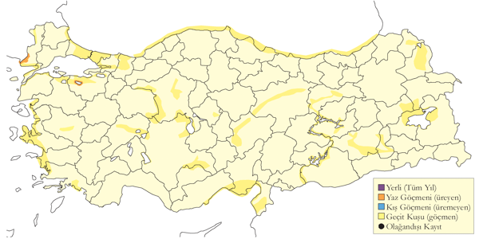
Üreme
Göllerin, nilüfer gibi suda büyüyen ya da yüzen bitkilere sahip korunaklı bölgelerinde, küçük kolonilerde ürer. Sazlardan ve su bitkilerinden oluşan bir yığının, büyümekte olan bir bitkiye tutturulmasından ya da üzerine yerleştirilmesinden oluşan ve tepesinde, daha ince malzemelerle astarlanmış bir deliğe sahip olan bir yuvası vardır. MAR. Uluabat Gölü’nde 2 Haziran 1966’da yüzen bitkilerin üzerinde 15-20 çiftin yuvaladığı gözlenmiştir. R. F. Porter tarafından incelenen ve biri boş diğer ikisinde ise 2 ve 1 yumurta olan 3 yuvanın hepsi büyük olasılıkla tamamlanmamış kuluçkaya sahipti. Yine Uluabat Gölü’nde Mayıs 1967’de toplam yaklaşık 100 çifte sahip 4 koloni kaydedilmiş, Mayıs 1969’da ise 40’a kadar kuş ve yuvalama davranışı gözlenmiştir. 15 Mayıs-20 Haziran 1998 arasında en az 3 çiftin bıyıklı sumru kolonisi içinde yuvaladığı gözlenmiştir (Welch & Welch, 1998b). İÇA. 1967’de Eber Gölü’nde toplam 15 çifte sahip 2 koloni kaydedilmiş, 8 Mayıs’ta burada yuva yapma davranışı gözlenmiştir. Türkiye’deki yumurta sayısı hakkında ayrıntılı bilgi yoktur. Diğer bölgelerde olağan yumurta sayısı üçtür.
Alttürler ve Sınıflandırma
Türkiye’de nominat alttürü bulunur.
Büyük Korsanmartı
Stercorarius skua, Great Skua
Rastlantısal konuktur.
Altı alan kaydı vardır (hepsi ancak görünüşe göre en yeni iki tanesi tanımlanmamış ya da tanımsız olarak yayınlanmıştır): 15 Eylül 1967’de Ahtamar adası yakınlarında, Van Gölü genç bir birey (Vielliard, 1968), 30 Aralık 1983’te Tuzla Gölü’nde, Çukurova ve 7-8 Ocak 1986’da İskenderun Körfezi’nde birer birey, 9 Ocak 1990’da Ceyhan Deltası açıklarında (Çukurova) (Kasparek, 1990), 15 Nisan 1996’da Göksu Deltası açıklarında (Kirwan & Martins, 2000) ve 5 Nisan 2003’te Marmara Denizi’nde bir feribottan kaydedilmiştir. Dördüncü kayıt, 25 Nisan 2011’de Karataş’ta Katalan bir ekip görülen kuştur.
Doğu Akdeniz’deki diğer yerlerde de nadirdir. 1958 ile 1993 arasında Yunanistan’da beş defa kaydedilmiş (Handrinos & Akriotis, 1997), Kıbrıs (Flint & Stewart, 1992) ya da Lübnan’da (Ramadan-Jaradi et al., 2008)hiç kaydedilmemiş, bir tanesi iç kesimlerde olmak üzere İsrail’de dört defa kaydedilmiştir (Shirihai, 1996). Mısır’da en az beş tane kesin olmayan büyük korsanmartı kaydı vardır (1989).
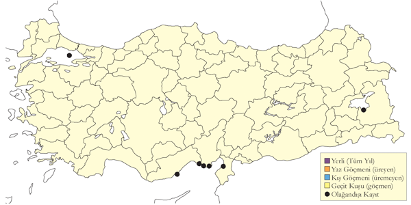
Üreme
Türkiye’de yuvalamaz.
Alttürler ve Sınıflandırma
Genellikle modern otoritelerin çoğu tarafından monotipik olduğu düşünülür. Bazı kaynaklarda Catharacta cinsi altında değerlendirir.
Küt Kuyruklu Korsanmartı
Stercorarius pomarinus, Pomarine Skua
Seyrek geçit türüdür.
2008 yılına kadar en az 25 yayınlanmış ve dört tane önceden yayınlanmamış kaydı vardır. İlkbahar geçişinde mart sonundan mayıs sonuna, sonbahar geçişinde temmuz ortasından ekim ortasına kadar görülür. En kalabalık olarak 13 Ekim 2002’de İstanbul Ormanlı açıklarında altı birey gözlenmiştir. İçsu kayıtları nadirdir. 26 Temmuz 1989’da Bendimahi’de genç bir birey (Kasparek, 1990) görülmüştür. Yukarıda listelenen kayıtların çoğu için tanımlayıcı detaylar eksiktir. Buna karşın, makul olan Türkiye’de küt kuyruklu korsanmartının kayıtların gösterdiğinden daha bile düzenli olduğudur.
türün kasım-aralık aylarında Boğaziçi’nde düzenli olduğunu kabul eder (Alléon, 1880) ve ilkbahar 1888 ve Mayıs 1892 tarihli ve “Marmara” olarak etiketlenmiş iki örneği Sofya Ulusal Doğa Tarihi Müzesi’ndedir. Öte yandan, Boğaziçi, Kadıköy açıkları ve Üsküdar’la Haydarpaşa arasında olmak üzere türü altı defa kaydetmiştir (30 Ekim 1888, 17 Kasım ve 15 Aralık 1890, Ocak 1891 sonu, 3 Aralık 1892 ve 15 Aralık 1893) (Mathey-Dupraz, 1920–24). Geriye bakıldığında o dönemde korsanmartı tanımlaması ile ilgili yeterli bilgi olup olmadığı dikkate alınmalıdır.
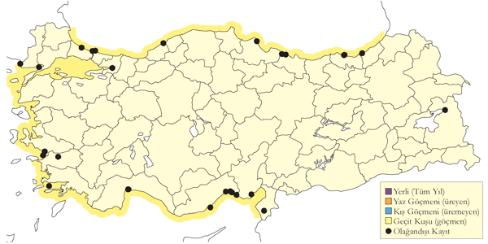
Üreme
Türkiye’de yuvalamaz.
Alttürler ve Sınıflandırma
Monotipik bir türdür.
Korsanmartı
Stercorarius parasiticus, Parasitic Jaeger
Yaygın ve az sayıda geçit türüdür.
Karadeniz kıyısı boyunca ve Boğaziçi ile Marmara Denizi’nde seyrek ancak neredeyse kesinlikle düzenli bir geçit türüdür. Görünüşe göre Ege ve Akdeniz kıyılarında düzenlidir ve aynı zamanda diğer tüm korsanmartılar gibi ara sıra kara üzerinde de göç eder. Burdur Gölü’nde, üç defa Kulu Gölü’nde ve bir defa Ereğli Sazlığı’nda ve Doğu Anadolu’da Bendimahi, Van Gölü ve Van yakınlarında olmak üzere iç bölgelerde de kaydedilmiştir. İlkbaharda, mart ortasından haziran sonuna kadar ve sonbaharda temmuz ortasından ekim başına kadar ve yoğun olarak eylülde geçiş yapar. Karadeniz kıyısı boyunca düzenli olarak kışlar. Welch ve Welch 1998a, Ocak 1997’de altı lokalitede toplam yedi birey kaydetmiştir. Aralık 1997’de İskenderun Körfezi’nde en az dört ve Fethiye açıklarında 13 birey kaydedilmiştir. Ocak 2004’te Kulu Gölü’nde olası bir kaydı vardır. (Kasparek, 1992) 50’ye yakın mevcut kaydı rapor etmiş, belirlenmemiş korsanmartı kayıtlarını dâhil etmeden, bazıları 15 bireyden oluşan toplam 114 kayıt derlemiştir. Ayrıca hepsi Alléon tarafından Marmara’da toplanmış dört tahnit vardır.
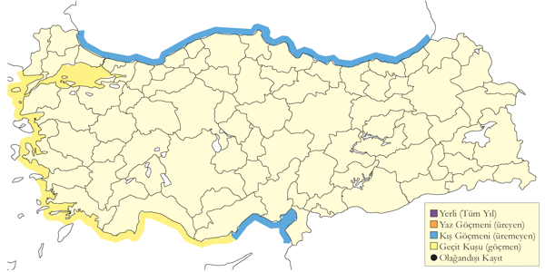
Üreme
Türkiye’de yuvalamaz.
Alttürler ve Sınıflandırma
Monotipik bir türdür.
Uzun Kuyruklu Korsanmartı
Stercorarius longicaudus, Long-tailed Jaeger
Rastlantısal konuktur.
Toplam dokuz güncel kaydı vardır: 23 Eylül 1979’da Boğaziçi’nde iki erişkin ya da ergen (Martins, 1989), 3 Haziran 1991’de Kulu Gölü’nde bir erişkin fotoğraflanmıştır, 11 Haziran 1991’de Taşucu açıklarında iki genç (Kirwan & Martins, 1994), 17 Eylül 1991’de İstanbul yakınlarında Karaburun açıklarında bir birey (Robel & Bräuning, 1992), 24 Mayıs 1992’de Finike’nin batısında Kale açıklarında bir erişkin, 10 Haziran 1994’te Sultansazlığı’nda açık fazda bir erişkin (Kirwan, 1995) ve 8 Mayıs 1999’da Yumurtalık açıklarında (Çukurova, Akdeniz) ikinci yazında bir birey (Kirwan et al., 2003) kaydedilmiştir. Bu kayıtların hiçbirinde tanımlama yoktur. Son olarak bir genç birey Mersin Limanı’nda 21 Aralık 2009’da beş korsanmartı ile beraber ve 29 Nisan 2011’de Sarıyer Keskin Viraj’da (S Bilgin) kaydedilmiştir. Mersin kaydı türün ilk kışlama kaydıdır.
Eylül 1888 sonlarında Terkos Gölü’nde kaydedilen ve tarafından tanımlanan birey açıkça bu türdür (Mathey-Dupraz, 1920–24). Ermenistan’da bir defa kaydedilmiş (Adamian & Klem, 1999) ancak Yunanistan (Handrinos & Akriotis, 1997) ya da Lübnan’da hiç kaydedilmemiştir (Ramadan-Jaradi et al., 2008).
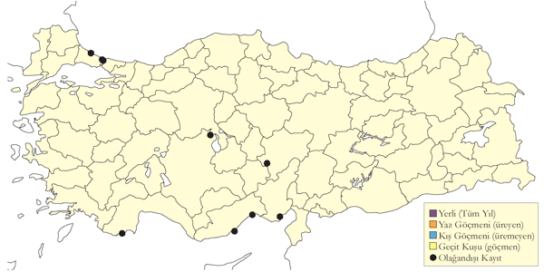
Üreme
Türkiye’de yuvalamaz.
Alttürler ve Sınıflandırma
Muhtemelen nominat alttür görülmektedir; ancak ülkedeki kayıtların hiçbiri alttür düzeyinde tanımlanmamıştır.